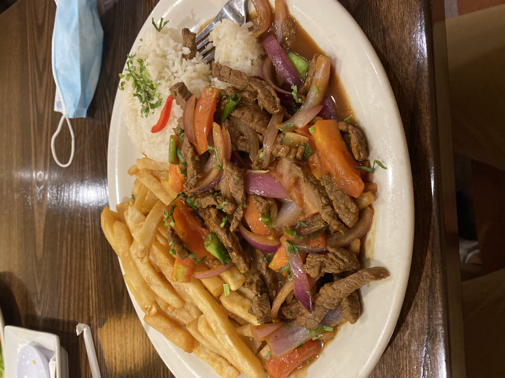

Lomo Saltado Recipe

This recipe is a Peruvian classic. Que mas quieres, despues de carne?
Ingredients
- 18 oz sirloin steak (cut into strips or cubes)
- 1 red onion (chunk slices)
- 2 tomatoes (strips)
- 1 ají amarillo chilli pepper (finely sliced)
- 1 tsp fresh garlic paste
- 2 tbsp olive oil
- 20 oz cooked white rice
- 11 oz potato slices
- 1/2 cup beef stock
- 4 tbsp soy sauce
- 4 tbsp plain vinegar
- Handful of cilantro leaves
- 1/4 tsp oregano
- 1 tsp black pepper
- 1 tsp cumin
- Salt, Baby!
Steps
- Fry potato slices in vegetable oil, set aside.
- Cut sirloin steak into strips. Marinate them in the cumin, salt, the 4 tablespoons of vinegar, atablespoon of olive oil, black pepper and the soy sauce for 10 minutes beforecooking.
- Bring a tablespoon of olive oil to a very high heat in the wok. Strain and remove the steak strips from the marinade, and fry them over a high heat for around 4-5 minutes or untilsealed.
- Add the onion, ají amarillo chilli pepper and the garlic paste to the wok. Fry for 1 minute whilst continuously moving the wok, and add the beef stock.
- Add the tomato and fry the ingredients in the wok for 30 seconds. Finally add the ground oregano and French fries, tossing everything together for another 10 seconds in order to integrate all the ingredients.
- Serve immediately with white rice and decorate with a few cilantro leaves. Sit back and enjoy the flavor of timeless classic of Peruvian cuisine!